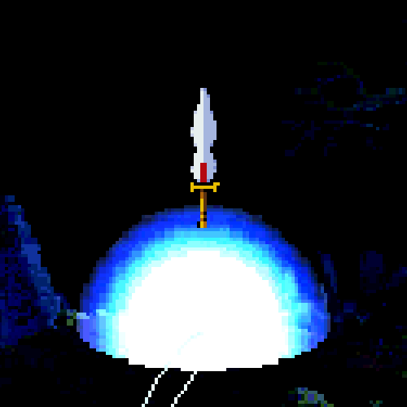

About the game


Guardian is a 1986 side-scrolling beat 'em up arcade video game developed by Toaplan and published in Japan by Taito and North America by Kitkorp. In the game, players assume the role of a robot fighting against a multitude of enemies and bosses across six locations on a futuristic science fiction setting. It is notable for marking the debut of Twin Cobra and Hellfire artist Kōetsu Iwabuchi in the video game industry, serving as its graphic designer.

Guardian was considered a financial flop in arcades for Toaplan. As of 2019, the rights to the title is owned by Tatsujin, a company founded in 2017 by former Toaplan member Masahiro Yuge and now-affiliate of Japanese arcade manufacturer exA-Arcadia alongside many other IPs from the defunct studio.